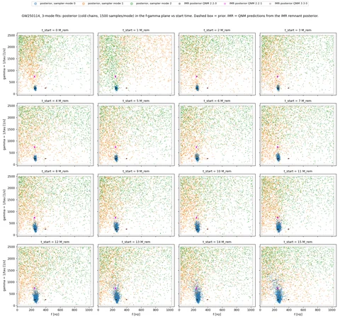
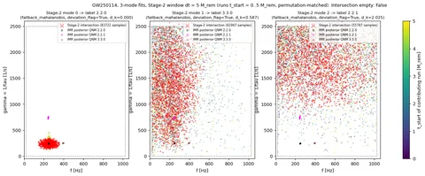
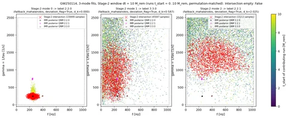
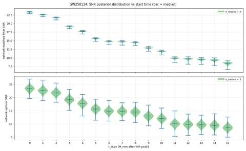
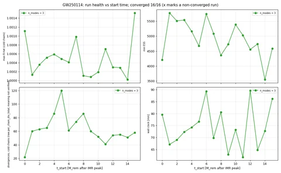

GW250114: 3-mode fits, 16 start times
All 3-mode fits across start times 0..15 M_rem after the IMR peak. Posteriors are the cold chains only. gamma = 1/tau in 1/s; f in Hz.
Stage 2 intersects the permutation-matched posteriors of the runs in a start-time window of width dt = 5 or 10 M_rem from t_start = 0. Stage 3 assigns QNM labels to the intersection modes. Divergence counts are the raw sampler counter; its exact meaning is not verified.
Settings
| n_modes | 3 |
|---|---|
| start times [M_rem] | 0, 1, ..., 15 |
| Stage-2 windows dt [M_rem] | 5, 10 |
Summary figures (5)
{kind=link}

{kind=link}

{kind=link}

{kind=link}

{kind=link}

Stage-3 mode assignment
Every assignment uses fallback_mahalanobis with deviation_flag = true: the conformal prediction point carries no amplitude or phase on real data. Labels come from the ranking d_k = sqrt((f_k/f_220 - 1)^2 + (gamma_k/gamma_220 - 1)^2) of the IMR-predicted QNMs.
| dt [M_rem] | window | Stage-2 mode index | QNM label (l.m.n) | d_k | method | deviation_flag |
|---|---|---|---|---|---|---|
| 5 | t0..t5 M_rem (6 runs) | 0 | 2.2.0 | 0 | fallback_mahalanobis | true |
| 5 | t0..t5 M_rem (6 runs) | 1 | 3.3.0 | 0.587 | fallback_mahalanobis | true |
| 5 | t0..t5 M_rem (6 runs) | 2 | 2.2.1 | 2.03 | fallback_mahalanobis | true |
| 10 | t0..t10 M_rem (11 runs) | 0 | 2.2.0 | 0 | fallback_mahalanobis | true |
| 10 | t0..t10 M_rem (11 runs) | 1 | 3.3.0 | 0.587 | fallback_mahalanobis | true |
| 10 | t0..t10 M_rem (11 runs) | 2 | 2.2.1 | 2.03 | fallback_mahalanobis | true |
IMR-predicted QNMs used for the ranking
| QNM label | f [Hz] | gamma = 1/tau [1/s] | d_k |
|---|---|---|---|
| 2.2.0 | 248.35 | 245.16 | 0 |
| 3.3.0 | 393.99 | 251.86 | 0.587 |
| 2.2.1 | 242.49 | 741.6 | 2.03 |
Runs (16)
| run | status | n_modes | t_start [M_rem] | f_0 [Hz] | gamma_0 [1/s] | f_1 [Hz] | gamma_1 [1/s] | f_2 [Hz] | gamma_2 [1/s] | network matched-filter SNR | max R-hat | min ESS | divergences, cold chains (raw) |
|---|---|---|---|---|---|---|---|---|---|---|---|---|---|
| t0Mf | converged | 3 | 0 | 250.6 (+8.524 / -7.815) | 224.8 (+58.1 / -41.63) | 195 (+256.7 / -153.8) | 1547 (+867 / -1096) | 340 (+596 / -304.2) | 1940 (+513.6 / -1044) | 23.4 (+0.104 / -0.166) | 1.001 | 4213 | 22 |
| t1Mf | converged | 3 | 1 | 250.4 (+9.172 / -8.179) | 226.8 (+61.68 / -42.39) | 428.8 (+532.8 / -389) | 1731 (+691.3 / -1128) | 209.8 (+347.4 / -160.7) | 1597 (+829.5 / -1241) | 22.6 (+0.11 / -0.174) | 1 | 5770 | 60 |
| t2Mf | converged | 3 | 2 | 251.3 (+9.388 / -8.628) | 230.3 (+67.07 / -45.75) | 248 (+548.1 / -207.9) | 1380 (+999.2 / -1028) | 434.9 (+532.6 / -379.3) | 2024 (+427 / -895.6) | 21.7 (+0.108 / -0.179) | 1 | 5508 | 63 |
| t3Mf | converged | 3 | 3 | 251.3 (+8.948 / -9.591) | 235.5 (+72.04 / -49.58) | 180.2 (+413.5 / -146.3) | 1428 (+969.4 / -1090) | 416.7 (+549 / -372.6) | 1868 (+578.9 / -1180) | 19.1 (+0.116 / -0.196) | 1.001 | 5539 | 65 |
| t4Mf | converged | 3 | 4 | 251.2 (+9.6 / -9.605) | 238.4 (+79.43 / -50.97) | 235.7 (+502.3 / -199.3) | 1328 (+1038 / -1041) | 466.4 (+510.6 / -411.2) | 1944 (+504.9 / -1078) | 17.7 (+0.115 / -0.218) | 1.001 | 5164 | 86 |
| t5Mf | converged | 3 | 5 | 251.6 (+10.65 / -10.95) | 244.7 (+83.76 / -56.78) | 197.7 (+460.3 / -162.5) | 1355 (+1026 / -1063) | 471.4 (+501.7 / -422.7) | 1869 (+576.9 / -1202) | 15.6 (+0.127 / -0.236) | 1 | 4674 | 120 |
| t6Mf | converged | 3 | 6 | 251.7 (+12.54 / -12.53) | 253.2 (+104.8 / -62.03) | 191.1 (+483.2 / -156.5) | 1321 (+1041 / -1007) | 449.6 (+528.7 / -404.2) | 1863 (+584.8 / -1181) | 14.7 (+0.139 / -0.253) | 1 | 5741 | 61 |
| t7Mf | converged | 3 | 7 | 252.2 (+12.76 / -14.17) | 258.4 (+115.9 / -69.51) | 181.8 (+463.5 / -149.5) | 1370 (+1010 / -1068) | 455.1 (+521.7 / -406.5) | 1849 (+599.1 / -1245) | 14.7 (+0.139 / -0.257) | 1.001 | 5086 | 74 |
| t8Mf | converged | 3 | 8 | 252.8 (+15 / -15.78) | 269.4 (+141.4 / -83.41) | 185.1 (+486.7 / -150.7) | 1387 (+989.3 / -1040) | 446.8 (+532.8 / -398.5) | 1867 (+574.8 / -1158) | 14.4 (+0.155 / -0.266) | 1 | 4362 | 86 |
| t9Mf | converged | 3 | 9 | 254.3 (+17.69 / -18.99) | 286.1 (+175.5 / -98.31) | 165.7 (+439.6 / -135.5) | 1521 (+896.5 / -1130) | 434.1 (+534 / -392.7) | 1888 (+552.7 / -1227) | 12.9 (+0.217 / -0.321) | 1 | 4730 | 60 |
| t10Mf | converged | 3 | 10 | 254.9 (+19.29 / -19.15) | 287.4 (+174.9 / -106.8) | 183 (+396.2 / -149.6) | 1390 (+985.4 / -1034) | 458.1 (+511.4 / -405.2) | 1843 (+596.9 / -1215) | 11.9 (+0.184 / -0.341) | 1 | 5384 | 52 |
| t11Mf | converged | 3 | 11 | 258.2 (+21.51 / -21.63) | 301.8 (+211.5 / -118.7) | 162.2 (+349.7 / -129.7) | 1491 (+910.8 / -1091) | 393.6 (+559.8 / -348.5) | 1831 (+608.1 / -1190) | 9.89 (+0.227 / -0.399) | 1.001 | 5029 | 41 |
| t12Mf | converged | 3 | 12 | 259.4 (+24.79 / -22.79) | 312.1 (+236 / -126.2) | 210.7 (+434.2 / -175.4) | 1473 (+913.2 / -1058) | 484.8 (+483 / -431.3) | 1845 (+601.2 / -1291) | 9.69 (+0.244 / -0.414) | 1 | 4555 | 54 |
| t13Mf | converged | 3 | 13 | 260.1 (+26.87 / -40.82) | 341 (+434.8 / -157) | 205.9 (+447.2 / -173.7) | 1514 (+884.6 / -1112) | 438.4 (+526.3 / -388.7) | 1841 (+598.5 / -1193) | 9.53 (+0.254 / -0.495) | 1 | 4740 | 55 |
| t14Mf | converged | 3 | 14 | 261.3 (+30.51 / -45.82) | 354.2 (+516.2 / -175.3) | 189.3 (+451.3 / -158.6) | 1442 (+941.9 / -1067) | 440 (+526.4 / -395.8) | 1879 (+564 / -1178) | 9.31 (+0.269 / -0.52) | 1 | 3550 | 51 |
| t15Mf | converged | 3 | 15 | 260.4 (+38.25 / -114.3) | 379.6 (+773.6 / -205.7) | 241.2 (+520.9 / -206.8) | 1284 (+1064 / -960.8) | 404.8 (+554.4 / -355.7) | 1984 (+466.8 / -953.2) | 8.41 (+0.333 / -0.678) | 1.002 | 4585 | 58 |